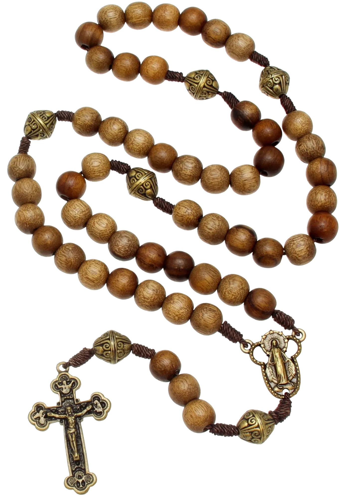

Clique na foto seguindo a ordem real da oração: comece no crucifixo, suba pela haste (7 contas: crucifixo → credo → Pai Nosso → 3 Ave-Marias → Glória/medalha), depois siga pela alça inteira até fechar de volta perto da medalha (65 contas). Total: 72 cliques. Clicou errado? Use "Desfazer último".

O JSON abaixo atualiza a cada clique. Quando chegar em 72, copia e me manda aqui no chat.